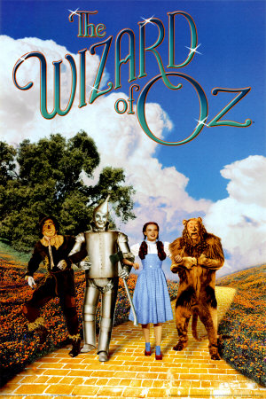

Then, being prepared for the journey, they all started for the Emerald City; and the Winkies gave them three cheers and many good wishes to carry with them.
You will remember there was no road--not even a pathway--between the castle of the Wicked Witch and the Emerald City. When the four travelers went in search of the Witch she had seen them coming, and so sent the Winged Monkeys to bring them to her. It was much harder to find their way back through the big fields of buttercups and yellow daisies than it was being carried. They knew, of course, they must go straight east, toward the rising sun; and they started off in the right way. But at noon, when the sun was over their heads, they did not know which was east and which was west, and that was the reason they were lost in the great fields. They kept on walking, however, and at night the moon came out and shone brightly. So they lay down among the sweet smelling yellow flowers and slept soundly until morning--all but the Scarecrow and the Tin Woodman.
The next morning the sun was behind a cloud, but they started on, as if they were quite sure which way they were going.
